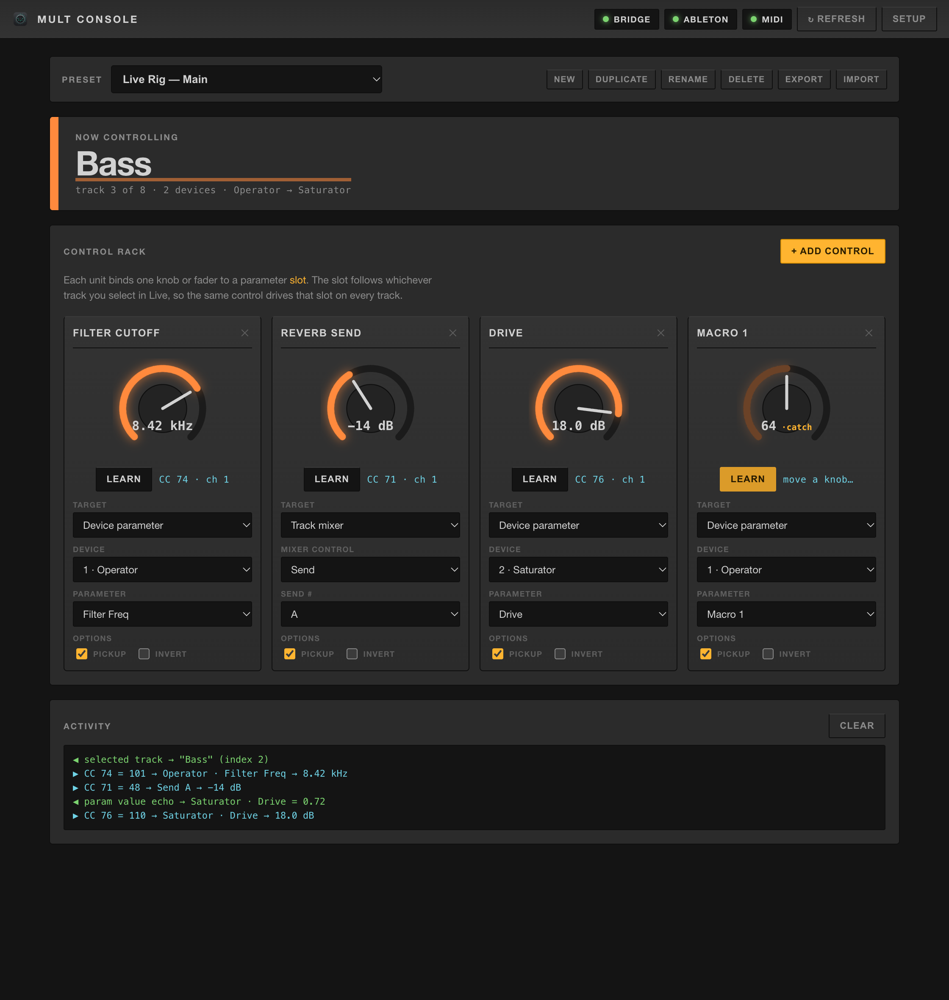
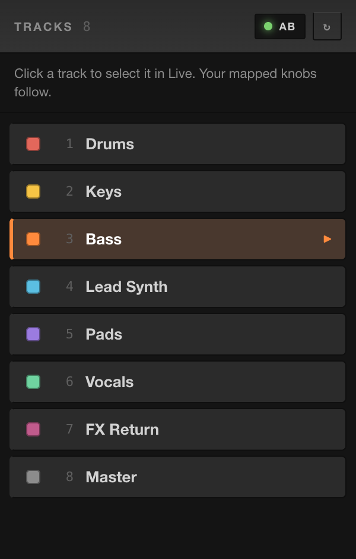
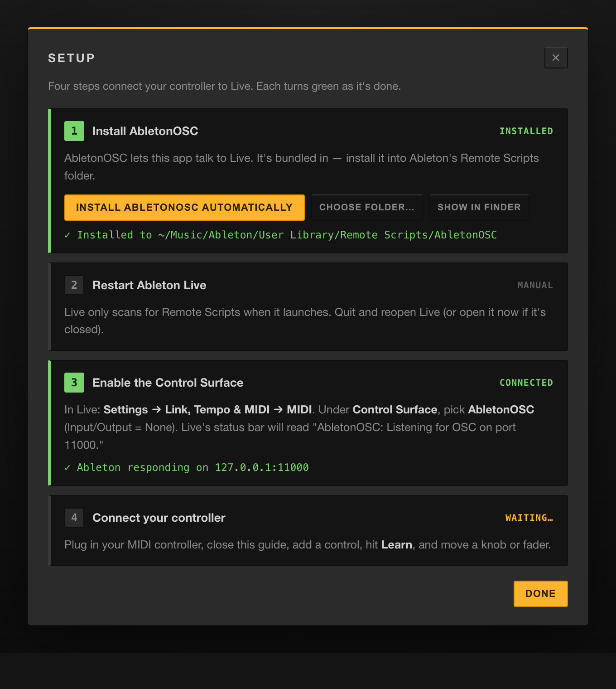
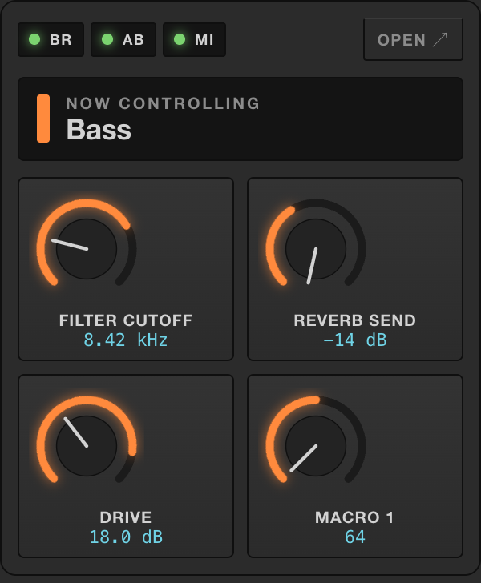
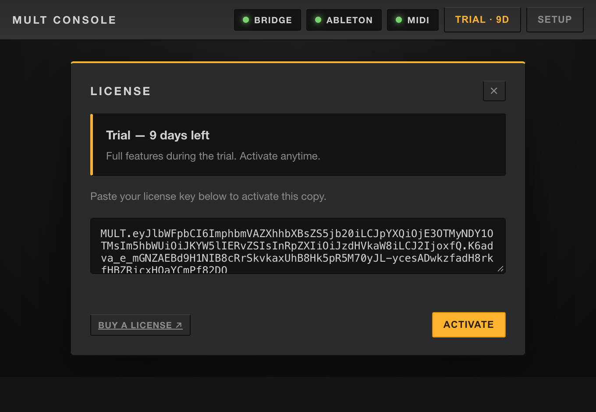

Map a single fader to a parameter slot that follows the track you select in Live. Build the mapping once — it works across your whole set, forever.

A knob maps to one parameter. Your set has dozens.
Mult Console binds your knob to a slot, not a parameter. The slot follows the track you have selected, so one physical control drives "Filter Cutoff" on every synth in the project.
Designed to feel like it belongs inside Live — and to stay out of your way on stage.
A control follows the selected track by position, so one knob drives the same parameter on every track in the set.
Pop out a list of every track — click one to select it in Live, and your mapped knobs instantly jump to it. Hands-free switching.
Click Learn, wiggle a fader — it's bound. Works with Control Change from any class-compliant controller.
Target device parameters, the track mixer (volume, pan, sends, mute / solo / arm), or scrub the arrangement timeline.
Point at a Rack's Macros to sweep several plugin parameters from a single knob — per track.
Grabbing a knob won't jump the value — it "catches" when it passes the current position. Safe for live use.
Save, duplicate, import and export mapping sets. One for the studio, one for the tour.
A compact popover shows your knobs moving in real time while the main window is closed.
Packaged builds check for new releases and update themselves in place.

Pop out the full track list beside Live. Every track shows its name and Live color, with the selected one highlighted.
Click any row to select that track in Live — and because every mapped knob follows the selection, your whole controller re-targets at once.
Open with the Tracks button, the tray menu, or ⌘T.

The app ships the Ableton bridge and installs it for you on first launch. Each step lights up green as it completes.
No scripting, no Terminal, no config files — connect your controller and go.

A compact menu-bar popover mirrors your mapped knobs in real time and shows the track you're controlling — without opening the full window.
Left-click the tray icon for the popover; right-click for status and quick actions.
Ableton has no network API and apps can't speak Live's protocol directly. Mult Console bridges the gap — entirely on your machine.
The bridge runs inside the app — no separate server to manage. Selected-track and parameter values stream back the same way, so the on-screen knobs always match Live.
A perpetual license — including every 1.x update. 14-day free trial, no card required.
14-day money-back guarantee. Keys activate offline — no account, no activation server.

14-day free trial — fully featured, nothing locked. When it ends the app keeps working; you'll just see a reminder to activate.
Paste your key into Mult Console → License and you're done. Keys are cryptographically signed and verified entirely on your machine — no network required.
Fully featured for 14 days. Install, open the guided setup, and you're mapping in minutes.
Downloads the right build, installs to Applications, clears the Gatekeeper flag, and opens it. Prefer a .dmg? Grab it from the releases page and open it once via right-click → Open.
Run the installer from the latest release. After launch, the in-app Setup installs the Ableton bridge for you — you'll just restart Live and pick the Control Surface.
Yes — it's how the app talks to Live. The good news: it's bundled with Mult Console and installed for you on first launch. You only restart Live and pick the Control Surface, which the guided setup walks you through.
Any class-compliant MIDI controller that sends Control Change (CC) messages — the usual output of faders and knobs. Note messages are ignored for now.
No. Everything runs locally — mappings, the bridge, and license verification. No account, no cloud, no telemetry.
A perpetual license for the version you buy, including all 1.x updates. Keys are cryptographically signed and verified offline — paste yours into Mult Console → License. Move an activation between your machines anytime.
Absolutely. Every tier allows commercial use — on stage, in the studio, and in client work. No royalties, no per-project fees.
The build is signed but not Apple-notarized, so macOS asks the first time. Use the one-line installer (it clears the quarantine flag), or run xattr -cr "/Applications/Mult Console.app" once.